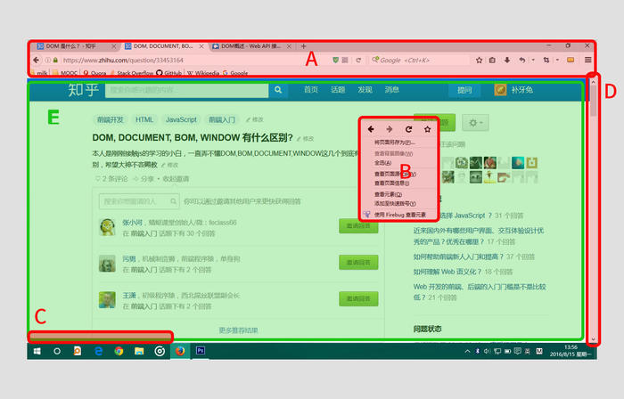
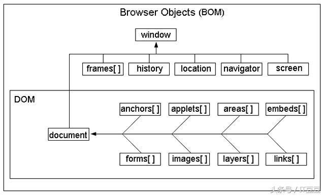

JavaScript = EMCAScript + BOM + DOM
BOM 定义了JavaScript可以进行操作的浏览器的各个功能部件的接口；
DOM 是一个使程序和脚本有能力动态地访问和更新文档的内容、结构以及样式的平台和语言中立的接口。
注：window VS. document，BOM VS. DOM
window是BOM对象，而非JavaScript对象，Window 对象表示浏览器中打开的窗口，不过恰好为EMCAScript中所定义的Global对象。BOM的核心是window，而window对象又具有双重角色，它既是通过js访问浏览器窗口的一个接口，又是一个global全局对象。
由于window包含了document属性，因此JavaScript可以直接通过使用window的document对象来访问、检索、修改文档内容与结构。因为document对象又是DOM的根节点，所以可以理解为BOM包含了DOM。即浏览器提供出来给予访问的是BOM对象，而BOM对象再访问到DOM对象，从而js可以操作浏览器以及浏览器读取到的文档。
通俗来讲：
DOM 就是针对 HTML 和 XML 提供的一个API，就是说为了能以编程的方法操作这个 HTML 的内容（比如添加某些元素、修改元素的内容、删除某些元素），我们把这个 HTML 看做一个对象树（DOM树），它本身和里面的所有东西比如 <div></div> 这些标签都看做一个对象，每个对象都叫做一个节点（node），节点可以理解为 DOM 中所有 Object 的父类。
DOM 是为了操作文档出现的 API，document 是其的一个对象；
BOM 是为了操作浏览器出现的 API，window 是其的一个对象。
图示化说明（版权非我）

归DOM管的：
E区（就是你说的document。由web开发人员呕心沥血写出来的一个文件夹，里面有index.html，CSS和JS什么鬼的，部署在服务器上，我们可以通过浏览器的地址栏输入URL然后回车将这个document加载到本地，浏览，右键查看源代码等）
归BOM管的：
A区（浏览器的标签页，地址栏，搜索栏，书签栏，窗口放大还原关闭按钮，菜单栏等）
B区（浏览器的右键菜单）
C区（document加载时的状态栏，显示http状态码等）
D区（滚动条scroll bar）
BOM（browser object model,API）是Window对象、Document对象、History对象、Location对象、Navigator对象、Screen对象等合起来组成的模型，至今没有各个浏览器统一的公开标准，但是一般各个浏览器都支持。
